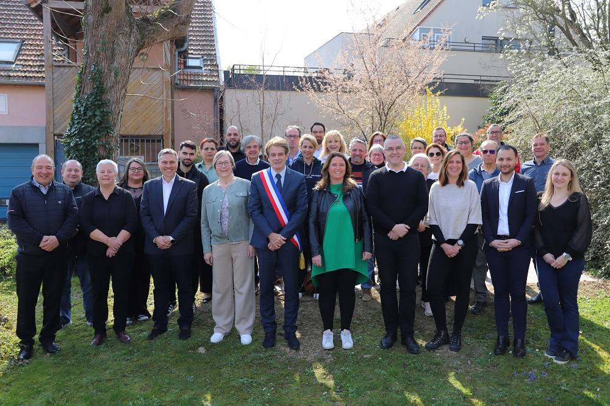
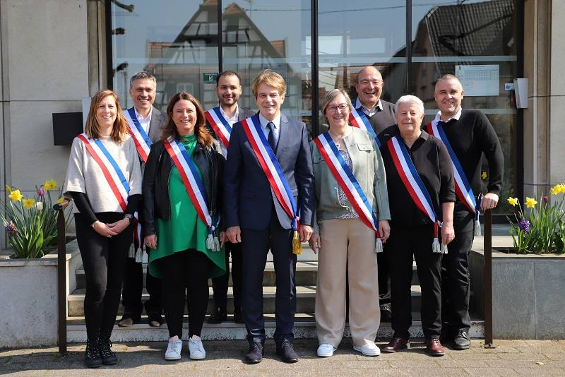

L’installation du nouveau Conseil municipal, entièrement renouvelé dès le premier tour des élections municipales et communautaires du 15 mars 2026, a eu lieu dimanche 22 mars 2026 à 11h en salle du conseil municipal à Hoenheim. Cette séance s’est déroulée en présence de nombreux habitants.
À cette occasion, Vincent Debes a été élu Maire de la commune.
Le Conseil a également fixé à 8 le nombre d’adjoints au Maire, avant de procéder à leur élection :
- 1ère adjointe : Gaby Wurtz
- 2e adjoint : Romaric Gusto
- 3e adjointe : Adeline Hugueny
- 4e adjoint : Claude Fabre
- 5e adjointe : Evelyne Floris
- 6e adjoint : Jean-Marc Arrieudebat
- 7e adjointe : Marion Arnold
- 8e adjoint : Cyril Benabdallah
{kind=link}

Les conseillers municipaux : Véronique ARTH, Sophie Sara BIENFAISANT, Caroline BONAZZA, Salim BOULKERARA, Lou-Anne CORA, Armand FISCHER, Chantal GERLING, Stéphanie GERMAIN, Latifa GHARBI, François HAMMES, Dzenan HADZIFEJZOVIC, Hakima KHIF, Michelina KIEFFER, Dominique LACOUR, Estelle LUSTIG, Didier MERCK, Nyoucha MOHAMMADZADEH BABR, Mickaël NURDIN, Nathalie RICHARD, Arnaud TOULY, Michel VENTE, Denis WITTEMANN, Joan ZINCK, Daniel ZUGMEYER.
Félicitations à l’ensemble de l’équipe municipale pour cette nouvelle mandature au service des habitants de Hoenheim.